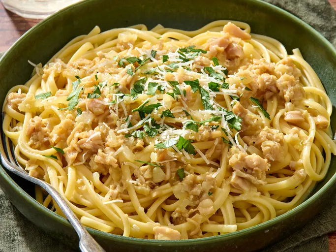

Pasta with clams
Home

Description
This clam sauce is better than any you can find at a restaurant. My boyfriend begs me to
make this. Thanks, Mom! Serve this dish with fresh garlic bread and a nice white wine.
I promise this is a keeper, and you won't like any other white clam sauce.
Ingridients
- 1 (16 ounce) package dried linguine
- 3 tablespoons olive oil
- 1 onion, chopped
- 6 cloves garlic, chopped
- 4 (6.5 ounce) cans minced clams
- ½ cup butter
- 2 tablespoons dry white wine
- salt and pepper to taste
Steps
- Bring a large pot of lightly salted water to a boil. Cook linguine at a boil until tender yet firm to the bite, about 11 minutes. Drain.
- Warm olive oil in a large skillet over medium heat. Sauté onion and garlic in hot oil until onions are translucent, 3 to 4 minutes. Drain cans of minced clams, reserving1/2 of the juice.
- Stir clams, reserved juice, butter, wine, salt, and pepper into onion mixture. Simmer until sauce has reduced by 1/3 and has thickened, about 20 minutes.
- Spoon clam sauce over linguine and serve.